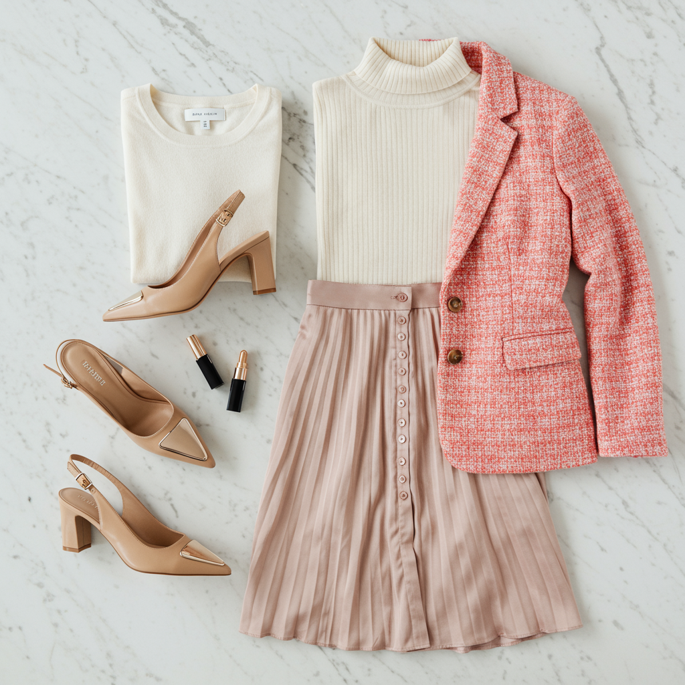

Curated picks for your wardrobe

Vince Camuto
~$99
A timeless pointed-toe pump updated with a slender metal rand and architectural covered heel. Crafted of leather with a slingback strap featuring a panel of stretch goring for comfort. Approximately 2.7" covered slim block heel. Leather upper, slip-on design. Rated 4.23/5 stars by customers for all-day comfort.
Note: Verify size availability and exact price at your preferred retailer before purchasing.
Shop at Nordstrom Shop at Dillard'sThis is the single biggest gap in your shoe collection. You have 20 pairs of shoes — black heels, boots in every shade, sneakers galore — but zero nude pumps. A nude heel is the ultimate wardrobe workhorse: it elongates your legs, goes with every color, and works for work, church, and date night. The Hamden's slingback design and block heel make it comfortable for all-day wear, and the 2.7" heel is the sweet spot between polished and practical.
Flat-lay outfit ideas pairing this piece with items you already own
Blush Hour
Chai Latte slingback pumps + Blush pink satin pleated midi skirt (#130) + Ivory/cream turtleneck (#77) + Pink/cream/coral boucle tweed blazer (#215). A tonal blush-to-nude palette that's date night perfection.